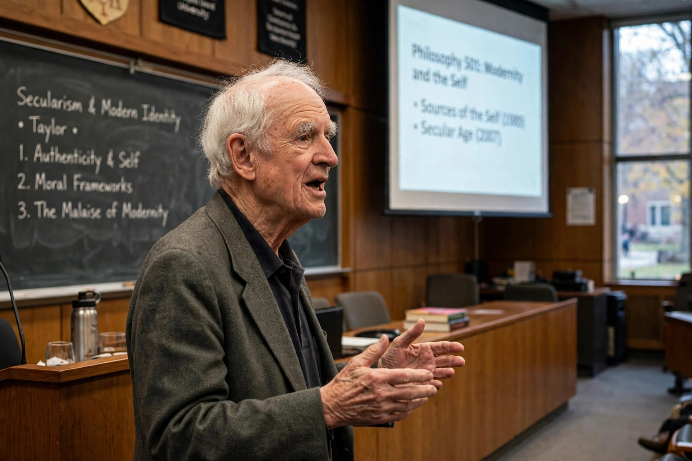

Charles Taylor (philosopher)

| Charles Taylor | |
|---|---|
| Born | 5 November 1931, Montreal, Quebec, Canada |
| Occupation | Philosopher |
| Institution | McGill University |
| Notable works | Sources of the Self (1989); A Secular Age (2007); "The Politics of Recognition" (1992) |
| Awards | Templeton Prize (2007); Kyoto Prize (2008); Berggruen Prize (2016) |
Charles Margrave Taylor (born 1931) is a Canadian philosopher, one of the most influential political and moral philosophers of the contemporary era. A professor emeritus at McGill University, he is known for his contributions to communitarianism, the philosophy of the self, the theory of multicultural recognition, and the study of secularisation. He was also an active politician, running four times for the New Democratic Party in federal elections and later co-chairing the Bouchard–Taylor Commission on reasonable accommodation in Quebec (2007–08).
Philosophy
Taylor's early work combined analytic philosophy with phenomenology and hermeneutics, attacking behaviourism and naturalism in the philosophy of mind. His magnum opus Sources of the Self: The Making of the Modern Identity (1989) traced the formation of the modern self through conceptions of inwardness, the affirmation of ordinary life, and expressivism, arguing that identity is constituted by orientation within a "framework" of strong evaluations about the good.
His essay "The Politics of Recognition" (1992) argued that identity is dialogically formed and that misrecognition — being confined in a false or demeaning image — is a form of oppression; the essay became a foundational text for theories of multiculturalism and identity politics. In A Secular Age (2007), Taylor rejected "subtraction stories" of secularisation, describing instead the changed "conditions of belief" in the modern West, where religious faith becomes one option among others within an "immanent frame".
Politics
A democratic socialist and a federalist defender of Quebec's distinct society, Taylor stood as an NDP candidate against Pierre Trudeau in 1965, losing narrowly. His thought blends social democracy, Catholic personalism, and the philosophy of Hegel, the subject of a major 1975 study.